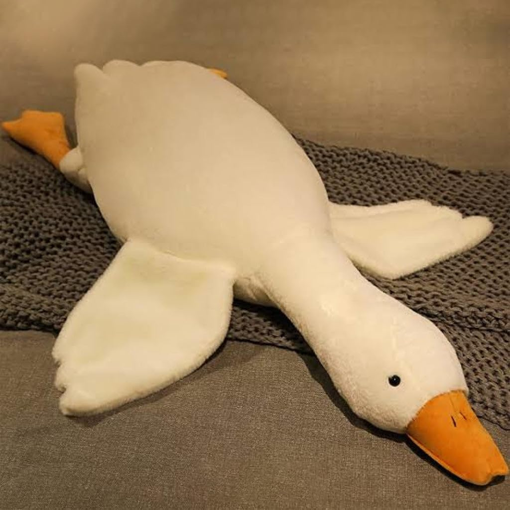

My hobbies include drawing and doing arts and crafts such as crochet or clay modeling little figurines
I have a talent for the arts and visual media, through works like animation and illustrations
My skills include creativity, critical thinking and problem solving.
I have a talent for the arts and visual media, through works like animation and illustrations
My skills include creativity, critical thinking and problem solving.

This is my favorite stuffed toy

This is my favorite game
Rio, The film features the voices of Anne Hathaway, Jesse Eisenberg,
Jemaine Clement, bLeslie Mann, George Lopez, and Jamie Foxx.
Captured by smugglers when he was just a hatchling, a macaw named Blu (Jesse Eisenberg)
never learned to fly and lives a happily domesticated life in Minnesota
with his human friend, Linda. Blu is thought to be the last of his kind, but when
word comes that Jewel (Anne Hathaway), a lone female, lives in Rio de Janeiro,
Blu and Linda go to meet her. Animal smugglers kidnap Blu and Jewel,
but the pair soon escape and begin a perilous adventure back to freedom -- and Linda.
6.9/10 IMDb Rating
Release Date: April 15, 2011
WALL-E, short for Waste Allocation Load Lifter Earth-class, is the last robot
left on Earth. He spends his days tidying up the planet, one piece of garbage at a
time. But during 700 years, WALL-E has developed a personality, and he's more than a
little lonely. Then he spots EVE (Elissa Knight), a sleek and shapely probe sent back to Earth on
a scanning mission. Smitten WALL-E embarks on his greatest adventure yet when he
follows EVE across the galaxy.
8.3/10 IMDb Rating
Release Date: June 27, 2008
My Favorite Songs
"Almost Home"
Artist: MXMtoon
37k Likes on Youtube
"Bon Iver"
Artist: MXMtoon
36k Likes on Youtube
Artist: MXMtoon
36k Likes on Youtube
"Almost Home"
Artist: MXMtoon
37k Likes on Youtube